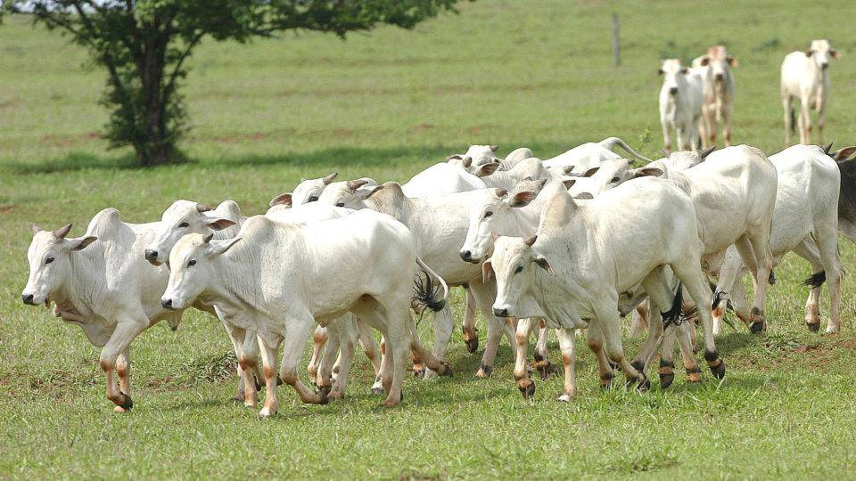
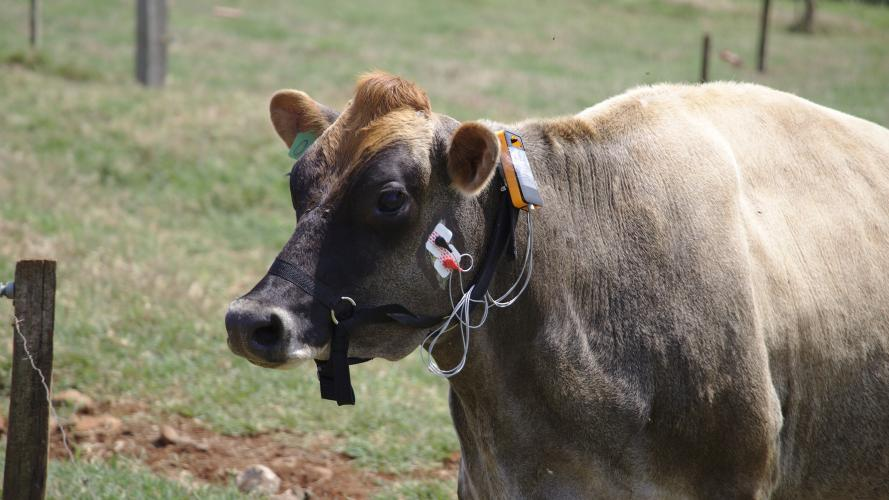

O abate de bovinos também cresceu no Brasil em 2023 e chegou a 34,06 milhões de cabeças, um aumento de 13,7% em relação a 2022. Em termos de cabeças abatidas, este foi o segundo maior resultado da série história da pesquisa, atrás apenas do registrado em 2013
Mato Grosso continua liderando o ranking, com 17,4% da participação nacional, seguido por Goiás (10,4%) e São Paulo (10,1%). O Paraná abateu 1.304.619 bois, crescimento de 0,3% em relação ao ano anterior (1.299.751). O Estado é o 9 maior produtor.
A Pecuária de Corte Paranaense ocupa a décima primeira colocação no ranking nacional de produção de carne bovina com um rebanho aproximado de 6,3 milhões de cabeças. A atividade utiliza uma área de 5 milhões de hectares e envolve 56.000 produtores, sendo o quarto maior Valor Bruto da Produção Estadual. A produção atual, de 349 mil toneladas, não atende a demanda do Estado, o que oportuniza estratégias de crescimento e a expansão para a atividade.
Neste sentido é necessário investir em sistemas de produção mais intensivos e eficientes, utilizando, dentre outros, os Programas: Agricultura de Baixo Carbono (ABC), Integração Lavoura-Pecuária, Integração Lavoura-Pecuária-Floresta, Sistemas, Programa de Inseminação Artificial e Programa de Produção de Bezerros.
PROPBAD | Programa de Produção de Bezerros em Áreas Declivosas – busca intensificar a produção pecuária em áreas declivosas, sem aptidão agrícola, focando na produção de matrizes e bezerros de qualidade, tornando o estado num grande berçário de bezerros.
